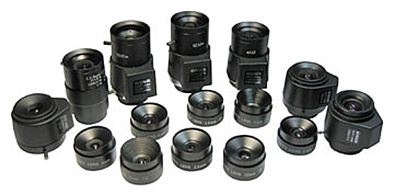
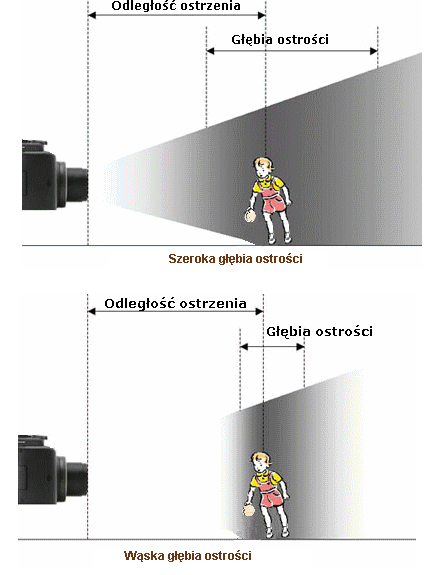
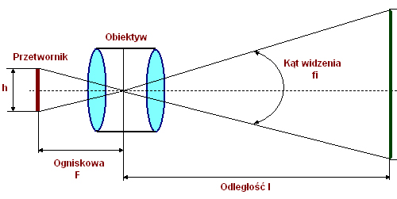
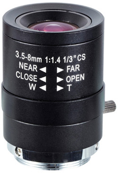

Podstawowe parametry techniczne obiektywów do kamer

Ogniskowa - jest to parametr, którego wartość określa odległość w jakiej centrum optycznego obiektywu powstaje obraz obiektu położonego w nieskończoności. Wartość ta jest wyrażana w milimetrach. Dla określonego rozmiaru przetwornika i znanej wartości ogniskowej można wyliczyć kąt widzenia kamery. Im dłuższa ogniskowa obiektywu tym kąt widzenia kamery jest mniejszy (np. obserwacja korytarzy). Mała wartość ogniskowej obiektywu sprawia, że kamera posiada duży kąt widzenia (np. obserwacja dużych pomieszczeń).
Przysłona - część obiektywu w postaci regulowanego otworu na drodze strumienia światła. Jej zadaniem jest zmienianie ilości światła przechodzącego przez obiektyw i padającego na powierzchnię światłoczułą przetwornika obrazu kamery.
Liczba aperturowa F (jasność obiektywu) - wartość określająca zdolność przepuszczania światła przez obiektyw, wyrażana w skali F. Wraz ze wzrostem liczby F maleje ilość światła przechodzącego przez obiektyw. Mała wartość F sprawia, że na powierzchnię przetwornika pada więcej światła (obiektyw jest jaśniejszy). Zazwyczaj w specyfikacji obiektywu podawane są dwie wartości liczby F: pierwsza maksymalne otwarcie przysłony, druga minimalne. Poniżej tabela przedstawiająca zależność liczby F od ilości przepuszczanego światła.
Głębia ostrości - parametr służący do określania zakresu odległości, w którym obiekty obserwowane przez kamerę sprawiają wrażenie ostrych. Wartość tego parametru zwiększa się z przymykaniem przysłony oraz ze skracaniem ogniskowej. Z reguły dąży się by głębia ostrości sięgała nieskończoności, czyli by obserwowane obiekty leżące dalej niż pewna minimalna odległość były widziane ostro. Duża głębia ostrości zapewnia ostrość większości elementów na obrazie, natomiast mała głębia ostrości jest pożądana w sytuacjach gdy chcemy wyodrębnić obserwowany obiekt od tła otoczenia.

Porównianie głębi ostrosci
Liczba transmisyjna T - wskaźnik określający rzeczywistą zdolność obiektywu do przepuszczania światła. Skala T umożliwia bezwzględną ocenę jasności obiektywu. W określaniu jakości obiektywu uwzględnia np. materiał z jakich wykonano jego soczewki czy rodzaj przepuszczanego światła.
Inne parametry : max. rozdzielczość, korekcja kolorów, ostrość i kontrastowość otrzymywanych obrazów, itd.
.
Podział obiektywów do kamer
Obiektywy do kamer dzielimy ze względu na trzy kryteria: kąt widzenia, rodzaj przysłony, rodzaj ogniskowej.
Podział ze względu na kąt widzenia:
- Wąskokątne, gdy ogniskowa obiektywu jest większa od przekątnej przetwornika obrazu,
- Standardowe, gdy ogniskowa jest podobna do przekątnej przetwornika,
- Szerokokątne, gdy wartość ogniskowej jest znacznie mniejsza od przekątnej przetwornika obrazu.
Podział ze względu na rodzaj przysłony:
- Bez przysłony no-IRIS, dedykowane do zastosowania w prostych kamerach,
- Z przysłoną ręczną,
- Z automatyczną przysłoną Auto-IRIS, dedykowane do zastosowania w kamerach dzień/noc.
Podział ze względu na rodzaj ogniskowej:
- Stała ogniskowa, najczęściej tego typu obiektywy posiadają ogniskową o długości: 3,6mm, 4,0mm, 6,0mm, 12,0mm, itd.
- Zmienna ogniskowa (Varifocal, Zoom), stosowane w miejscach gdzie liczby się swoboda w wyborze długości ogniskowej. Najczęściej spotykane obiektywy 3,5-8mm.
- Ogniskowa regulowana zdalnie, tak zwane obiektywy typu moto-zoom. Przeznaczone do najbardziej wymagających zastosowań.
Mocowania obiektywów do kamer
Obecnie spotyka się kamery z dwoma typami mocowań do obiektywów: C i CS. Różnicą między mocowaniem C i CS jest odległość obiektywu od powierzchni przetwornika obrazu. Dla mocowania CS odległość wynosi 12,5mm, natomiast dla obiektywów C jest to 17,526mm. Mocowanie typu CS jest znacznie częściej spotykane, co wynika przede wszystkim z większej uniwersalności tego mocowania. Poprzez zastosowanie dodatkowego pierścienia mocowanie obiektywu typu CS możemy bez większego problemu zmienić na mocowanie C, w druga stronę taka relacja nie zachodzi.
Dobór obiektywu do rozmiaru przetwornika
Rozmiary przetworników obrazu podaje się w calach, co jest związane bezpośrednio z wielkością obrazu który mogą wygenerować. Każdy obiektyw w swojej specyfikacji technicznej powinien posiadać największy format przetwornika obrazu, z którym może poprawnie współpracować.
W jaki sposób odpowiednio dopasować obiektyw do wielkości przetwornika? Przede wszystkim obiektyw musi być dopasowany do wielkości przetwornika. Do określonego rozmiaru przetwornika możemy stosować obiektyw o tym samym rozmiarze lub większy (nigdy obiektyw mniejszy). Stosowanie większego obiektywu w niektórych przypadkach jest korzystne, ponieważ pozwala na zmniejszenie zniekształceń obrazu. Obecnie najczęściej na rynku spotykane są obiektywy przystosowane do współpracy z przetwornikami o rozmiarach: 1", 2/3", 1/2" i 1/4".
Dobór ogniskowej obiektywu
Jak już wcześniej wspomniałem, dla określonego rozmiaru przetwornika i znanej wartości ogniskowej możemy wyliczyć kąt widzenia kamery. Należy pamiętać, że długość ogniskowej obiektywu jest zawsze odwrotnie proporcjonalna do uzyskiwanego kąta widzenia (duża wartość ogniskowej wąski - kąt widzenia, mała wartość ogniskowej - szeroki kąt widzenia).
Znając dokładny rozmiar przetwornika obrazu, odległość od obserwowanego obiektu oraz jego rozmiary możemy dokładnie wyliczyć, jaka będzie potrzebna ogniskowa obiektywu oraz jaki uzyskamy kąt widzenia kamery z takim obiektywem.

przetwornik obrazu i związane z nim parametry
Rodzaje przysłony
Obecnie w obiektywach do kamer przemysłowych można spotkać się z trzema typami przysłony: przysłona regulowana ręcznie, elektroniczna przysłona EI (Electronic Iris) oraz automatyczna przysłona AI (Auto Iris). Krótka charakterystyka typów przysłona:
Przysłona sterowana ręcznie- stosuje się w miejscach o stałym poziomie oświetlenia (wewnątrz obiektów). Przysłona jest regulowana przy pomocy specjalnego pierścienia lub dźwigni.

Obiektyw z ręcznie sterowaną przysłoną
Elektroniczna przysłona EI (Electronic Iris) - stosuje się w mało zmiennych warunkach oświetleniowych i z obiektywem z ręcznie sterowaną przysłoną. Istnieje możliwość zastosowania w bardziej zmiennych warunkach oświetleniowych, jednak w takim przypadku należy otworzyć przysłonę obiektywu. Elektroniczna przysłona najlepiej sprawdza się podczas pracy w pomieszczeniach. Podstawową zaletą jest możliwość stosowania tanich i prostych obiektywów o stałej lub ręcznie regulowanej przysłonie.
Automatyczna przysłona AI (Auto Iris)- jej zadaniem jest utrzymanie stałego poziomu oświetlenia, które pada na matrycę przetwornika, bez względu na panujące warunki oświetleniowe. Kamery wyposażone w obiektywy Auto Iris mogą poprawnie pracować w bardzo zmiennych warunkach np. w trybie całodobowym (dzień/noc). Najczęściej automatyczna przysłona AI jest stosowana w kamerach do zastosowań zewnętrznych. W zależności od natężenia światła obiektyw zamyka lub otwiera przysłonę i tym samym zapewnia stałe oświetlenie przetwornika. Regulacja obiektywu Auto Iris może odbywać się na dwa sposoby: VIDEO Iris lub DC Iris. Krótka charakterystyka obu metod sterowania w tabeli poniżej
Dobór przysłony
Rodzaj przysłony dobieramy bezpośrednio do warunków w jakich pracuje kamera. Najistotniejszym wyznacznikiem jest poziom oświetlenia i jego zmiany. W warunkach stałego oświetlenia najlepiej stosować obiektywy z ręcznie regulowaną przysłoną. Nie zaleca się stosowania obiektywów AI przy stałym oświetleniu, ponieważ ich stosowanie w takich warunkach jest nieopłacalne (droższe od pozostałych obiektywów). W zaciemnionych miejscach najlepiej stosować obiektywy "bardzo jasne" o liczbie F rzędu 1.2. Taki obiektyw w połączeniu z wysokoczułą kamerą pozwoli na prowadzenie efektywnej obserwacji nawet w bardzo trudnych warunkach oświetleniowych. W miejscach gdzie istnieje ryzyko prześwietlenia obrazu (silne źródła światła) doskonałym rozwiązaniem są obiektywy o liczbie F większego rzędu. Innym rozwiązaniem jest stosowanie filtrów szarych, lecz ograniczają one czułość przy słabym oświetleniu.
Filtr szary
Specjalny rodzaj filtru stosowanego podczas regulacji obiektywów z automatyczną przysłoną Auto Iris oraz w obiektywach ze stałą przysłoną w sytuacjach gdy poziom oświetlenia jest zbyt duży (chroni przed prześwietleniem obrazu). W regulacji obiektywów AI stosuje się dwa typu filtrów. Filtr oznaczony numerem 3 jest przeznaczony do regulacji kamer czarno-białych, zaś filtr szary z numerem 1 do regulacji kamer kolorowych. Jeżeli nie posiadamy filtru szarego z regulacją obiektywu z automatyczną przysłoną należy poczekać do zapadnięcia zmroku, gdy poziom oświetlenia jest niski. Filtr szary montujemy jedynie w obiektywach, które zostały do tego odpowiednio przystosowane (odpowiednia średnica i gwint).
Dobór obiektywu
Według normy EN 50132-7 kryteria doboru obiektywu do kamery powinny brać pod uwagę szereg następujących czynników
- wewnętrzne odbicia światła w obiektywie lub "mora" mogą znacznie pogorszyć jakość obrazu,
- zakres widzenia (kąt) obiektywu (podawane przez producentów w specyfikacji technicznej) w praktyce może być zmniejszone wskutek zbyt dużego rastra obrazu (overscan) w urządzeniu wyświetlającym,
- oświetlenie sensora obrazu w kamerze jest określone przez liczbę aperturową oraz liczbę transmisyjną obiektywu, które to wielkości zależą od konstrukcji danego obiektywu,
- w niektórych przypadkach obiektywy o tzw. zmiennej ogniskowej są narażone na zjawisko rampingu, które polega na zwiększaniu się efektywnej liczby aperturowej obiektywu przy wzroście ogniskowej.